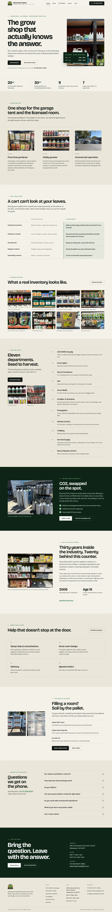

A beautiful website in 24 hours.
Answer one questionnaire. See your finished website tomorrow. Pay only if you love it.
No risk
See your finished website before you pay a dime.
Website Pricing
$1,500one time
You fill in the questionnaire below. We build your full website and send you a preview link within 24 hours. You pay only if you want to keep it. No deposit, no sales pitch.
Client work
Deep Roots Hydro is a hydroponics shop in Sebastopol, CA. We built their website.
Independent since 2006, with thirty years in the industry behind the counter. Growers across Sonoma County are willing to drive the distance to Deep Roots, and that reputation sets the bar for the website.

This is a client’s website, live on their own domain. Open it and look around.
It’s a walk-in shop with no online ordering, so the website has one job: answer the questions that decide whether someone makes the drive. What’s on the shelf, whether they’re open, and how to get there.
- Five pages: home, shop, CO2 refills, about and visit
- All eleven departments laid out, from grow lights to pest and disease control
- Hours, address and phone number on every page
- One tap to call the shop or open directions in the map app
- Built to look right on a phone
- Launched on their own domain
Dylan MarzulloOwner, Deep Roots Hydro · Sebastopol, CA
Visit deeproots707.comSamples
The quality you can expect from us.
Each one was built from a filled-in questionnaire and the photos that came with it. Click or tap any one of them to explore the website.


How it works
Three steps from questionnaire to live website.
Answer the questionnaire below.
You fill out the questionnaire. We offer discounts for more helpful answers that make your website better. Tell us about you and your business in your own words and send any photos you have.
Your website will be up within 24 hours.
A full multipage website, usually home, services and prices, about, gallery, and contact, written from your answers.
Approve it, and it goes live.
We put it on your domain, host it, and keep it updated for you.
Example: a caterer answers what their business does and sends three photos. Within 24 hours the website is built from those words. They approve the preview, and it goes live on their own domain.
Barrett DunaFounder & CEO
Our founder
16 years of building websites, and a decade of studying what makes them work.
Barrett Duna has designed and developed websites for 16 years, and has studied marketing extensively over the last decade. Duna Marketing is where the two meet: websites built to bring in calls, not just to look good.
He graduated from UCLA in 2013 with a degree in Mathematics and Economics, with coursework focused on data analytics and AI, and went on to a Stanford course in computer science algorithms. At UCLA’s Anderson School of Management he spent two years turning a dense academic paper on ticket markets into a working simulation. At Live Nation Entertainment he analyzed millions of ticket transactions to forecast sales and understand pricing.
“Barrett is a very bright, competent entrepreneur with a big vision for his future. He’s easy to get along with and knows his stuff when it comes to anything technology.”
Jim Stein, Founder and Chief of Strategy, Diamond Certified
Animations
People stop for things that move.
Words tell people what you do. Motion shows them. One animation can explain your service, show off your product or walk the visitor through your process faster than a wall of text that nobody wants to read ever can.
$350per animation
- Completely custom animation
- Designed by Duna Marketing for you
- No animation too complex
- All animations mobile-friendly
The Care Plan
The Care Plan keeps your website up to date, secure and healthy.
Care Plan Pricing
$149a month
Hours change. Prices go up. You add a service, hire someone, retire a photo, or move to a new number. Every owner has a website that says something that stopped being true months ago, and knows they are never going to sit down and fix it.
Here's what our Care Plan offers:
- Unlimited small changes, done within one business day. Text, photos, hours, prices, staff, contact details.
- One new section or page each month.
- Free hosting.
- Proud to offer the most secure website technology available.
- Backups of every website change.
- Text or email. No login, nothing to learn.
You could make these changes yourself. The plan exists because nobody does, and their website quietly falls behind. We've made it as simple as a quick text or email.
Month to month. Cancel anytime, and the website is yours either way.
Pricing
Four numbers. Nothing hidden.
Your website
$1,500one time
Paid only after you've seen the finished website.
- Custom design, not a template
- A full multipage website
- Copy written from your own answers
- Your photos edited and placed
- Looks right on phones
- A contact form that works
- Launch on your domain
- You own the website outright
- Ready to review within 24 hours
- No deposit, no sales pitch
- One more direction if the first isn't right
- Discounts for detailed questionnaire answers
- Built on 16 years of web design experience
Care plan
$149a month
Month to month. Cancel anytime. For those that sign up, payments start when your website goes live.
- Free hosting
- Proud to offer the most secure website technology available
- Backups of every website change
- Unlimited small changes, done within one business day
- One new section or page each month
- Changes by text or email, no login
- Hours, prices, photos and staff kept current
- No contract
- The website stays yours if you cancel
- Kept up to date, secure and healthy
- Your website never quietly falls behind
Animations
$350per animation
A piece of motion made for one spot on your website. The moving wall of websites at the top of this page is one.
- Completely custom animation
- Designed by Duna Marketing for you
- Added to your website by us
- Looks right on phones
- Add one whenever you like
Micro-Apps
$500per micro-app
A small tool that does one job on your website. The ROI calculator in this section is one.
- Calculators and estimators
- Booking and availability tools
- Quizzes and finders
- Quote builders and order forms
- Completely custom, designed by Duna Marketing for you
- Added to your website by us
You see the finished website before you pay anything.
Questionnaire
Start your questionnaire right here.
We know you're busy as a small business owner. Our questionnaire takes 20 minutes which seems long, but we have a perk.
With every question you submit, you earn points which discount your website. There's no discount limit and they add up fast. At the end of the 20 minutes, you'll be begging for 20 more.
Remember, you don't pay a dime unless you approve of the website we create for you which is based on your answers to this questionnaire.
Earn big discounts on your website
- Contact details are 10 pts each.
- Yes/no and multiple choice questions are 15 pts per question.
- Open-ended questions are 50 pts plus 5 pts per answered word.
- Every 125 pts you earn, you get a $1 discount off your website.
- Est. discount between $25 and $50.
Questions
Top 20 questions people ask.
How much does a website cost?
$1,500, one time. You pay only after you've seen the finished website.
How long does it take?
We send you a preview link within 24 hours of your questionnaire answers.
Do I pay anything up front?
No. There's no deposit, and you pay only if you want to keep the website.
What if I don't like it?
You don't pay. If you want, we'll try one more direction.
What do I need to give you?
Nothing. Just answer the questionnaire and provide your photos. You'll receive a link to your live website within 24 hours.
How long is the questionnaire?
About 20 minutes.
How do the questionnaire discounts work?
Every answer earns points: 10 for each contact detail, 15 for yes/no and multiple choice questions, and 50 plus 5 per word for open-ended ones. Every 125 points takes $1 off your website. The estimated discount is $25 to $50.
Is it a template?
No. Every website is a custom design, written from your own answers.
What about my photos?
Send the ones you have with your questionnaire. We edit them and place them on your website.
Will it look right on phones?
Yes. Every website is built to look right on phones.
Can I see examples?
Yes. The ten samples above were each built from a filled-in questionnaire and the photos that came with it.
Do I own the website?
Absolutely.
Will it be on my domain?
Yes. Once you approve it, we launch it on your domain.
What does the Care Plan cost?
$149 a month, month to month. Payments start when your website goes live.
Do I need the Care Plan?
It's optional, and we recommend it. It includes free hosting, unlimited small changes done within one business day, and one new section or page each month.
How do I ask for changes?
By text or email. There's no login and nothing to learn.
How fast are changes made?
Small changes, like text, photos, hours, prices, staff and contact details, are done within one business day. You also get one new section or page each month.
Can I cancel the care plan?
Yes, anytime. There is no contract.
Is my website secure?
Yes. Every website we host runs on the most secure website technology available.
Who builds the websites?
Duna Marketing, founded by Barrett Duna, who has 16 years of web design and development experience.
Contact
Questions? Email us.
The questionnaire above is the quickest way to get started. For anything else, send us an email and we'll get back to you.
On a computer?